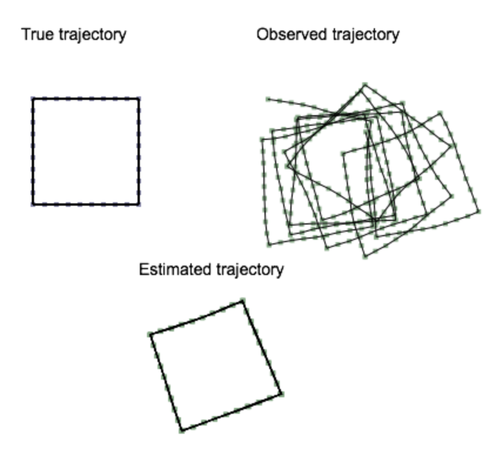

Project 1: Moving Least Squares
The objective of this project is to implement an algorithm to estimate the surface underlying a "point cloud" of 3D points. This surface estimate allows for noisy points from sensors (e.g., laser rangefinding, depth camera) to be smoothened or downsampled. For this purpose, you will implement the Moving Least Squares (MLS) algorithm for 2D point clouds, and adjust parameters for kernel weights, choice of polynomial functions, and sampling of surface query points.
Programming instructions:
For this project, you are free to use any programming language. It should contain a GUI that can display the 2D points (both input and output), as well as a means to load an input point cloud. You are welcome to use libraries like OpenCV, Qt, Java, C++ or any language for this purpose. We will provide you with git-repo that has the input data files and also a basic stencil code in JavaScript. The provided JavaScript stencil has a canvas that can display points entered into a textbox. We have also provided 3 data files for your testing (input_file1.txt, input_file2.txt, input_file3.txt) that can be copied into the stencil. You are welcome to use, build upon, and extend this stencil code.
Github link to the data and code:
Implementation details:
This project requires implementation of 3 functions:
- get_rlist():
Given a set of input points P (stored in plist), you should be able to generate new samples that will serve as query points for estimating the underlying surface. The output of this function is a list of sample points R (stored in rlist). There are existing methods to do this sampling, which will be covered in class presentations. You are welcome to try your own ways and give the analysis.
- get_qHlist():
Given input and sample query points, this function computes the local frame of reference for each sample point, as a point origin (q) and surface normal (H) from this origin. Computing the local reference frame for all the points in rlist will produce qlist and Hlist as the output of this method. This function will require some form of optimization to estimate each local reference frame.
- get_q_list()
Given estimated local reference frames, estimate (through an optimization routine) the parameters for a chosen polynomial of the input points (P) with respect to each reference frame. Points (Q) taken from these polynomials is the updated resampled point list q_list, or MLS smoothened point cloud.
Project 2: Mapping by Odometry
The objective of this project is to build a simple 3D RGBD mapping system using odometry. You become acquainted with 3D point cloud data and 3D geometric transforms. These concepts will allow building a 3D map from a synchronized sequence of point cloud frames and robot odometry. The implementation of this project will serve as the baseline for concepts in the course as well as the eventual mapping system you will produce this semester.
Programming instructions:
For this project, you will implement a mapping system that reads in a sequence of point cloud files and an odometry text file and outputs the resulting map to an interactive 3D display. The input point cloud files will be in the Point Cloud Data (PCD). The odometry text file will have a list 6 degree-of-freedom poses for the pose of the robot's camera (in the odometric frame) at each instance of the sequence. This project requires implementation of an interactive GUI that can display 3D points and change viewpoints in real time. Any programming language can be used for this assignment. We recommend using the Point Cloud Library, a C++ library for processing point cloud data, to import PCD files and interactive visualization of the resulting map. You will be introduced to the data and the processing methods in a lab sessions. You will also have to show the results in the PCL visualizer which has the properties to place the point clouds spacially at the specified locations in 3D using transforms.
Github link to the data and code:
TBD
Implementation details:
Totally you will implement 3 functions.
- read_pcd_odom():
Given a sequence of point cloud data (pcd files) and odomotry file, read these files and store them into a data structure.
- compute_trasforms():
Build the 3D map from the imported point clouds and odometry. This function will involve computing the 3D matrix transform for each odometric pose and transforming its associated point cloud points into the frame of this pose.
- show_map()
Display the overall point cloud from the constructed map in the interactive 3D GUI. This function should be sure to display the color of each point as well as its location in space.
Project 3: SGD SLAM
Objective:
The objective of this project is to implement a Simultaneous Localization and Mapping algorithm for estimating a robot's true trajectory from noisy odometry. The Stochastic Gradient Descent algorithm will be used to perform SLAM as an optimization of the robot's pose graph to match poses that form a loop closure. The input into this algorithm is a sequence of N robot poses and loop closures expressed as constraints between two poses. The output will be the corrected N pose sequence, where each iteration of the displayed through some user interface.
Programming instructions:
For this project, you are free to use any programming language. It should contain an interface that can display three 2D pose graphs (for ground truth, input, and output). You are welcome to use libraries like OpenCV, Qt, Java, C++ or any language for this purpose. We will provide you with git-repo that has the input data objects and basic stencil code in JavaScript. The provided JavaScript stencil has a canvas with hardcoded data objects. You are welcome to use, build upon, and extend this stencil code.
Github link to the data and code:
TBD
Implementation details:
This project requires implementation of Algorithm 1 from "Fast Iterative Alignment of Pose Graphs with Poor Initial Estimates" by Olson et al. Implementation of this algorithm requires matrix multiplication, 2D matrix transform, and matrix inversion routines. Matrix inversion will only be provided for the JavaScript stencil, using numericjs.